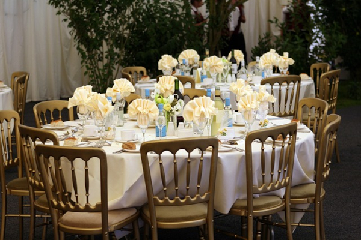
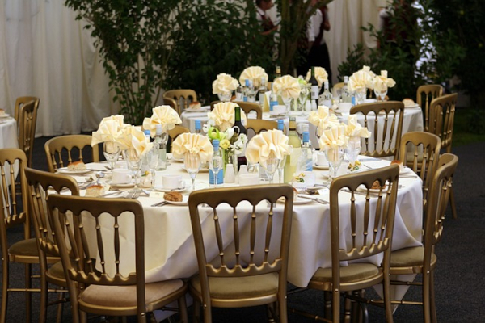

Reception
If you are going to the temple for a wedding ceremory, we can help it out. The only difference between the wedding reception services and the temple missionary services is that the wedding reception comes with a little bit of extra charges, but they are all clarified before you finish your reservation contract with us. The services we offer for wedding are the decoration setup and the catering menu. The wedding setup will be made on the dining hall and the entrance area, where the couple and their family can take pictures to record the moment.
 

There catering services will serve special desserts with a tone of wedding and white color covers on the tables. An example of how the dining room will look like is being portrait in the images that are being shown aside. There is also a special cake that is offered with an option of a decoration image on top of the cake that can be sent by you beforehand. Other wedding reception services may include typical dress rental for the bride and wedding guest attire for our waiters and waitresses.
Back to Services Reserve Now